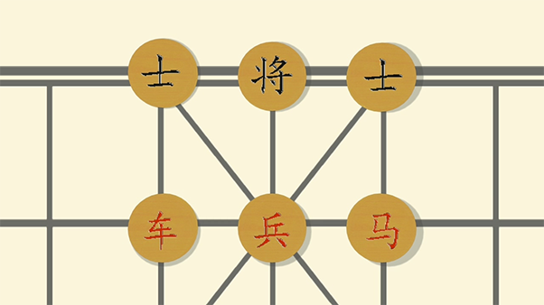

通过图形变换和镜头调度，串连多个中国传统文化意象。
利用点作为短片的起点和终点，中间镜头展现以点为核心的多种形态变化。
使用After Effects制作主要动画，并搭配三维软件CINEMA 4D制作复杂变换镜头（如油纸伞、茶水、象棋的镜头调度）。
在AE中，使用了文字、路径图层、摄像机、继承、布偶等多种动画形式，搭配蒙版、图层混合、3D图层及多种效果器，营造了扁平化的中国风。对于一些复杂又具有规律的动画，采用表达式代码来控制其变换。
传统的墨迹效果

剪纸+折扇+油纸伞
图案：《孔雀东南飞》
取景自杭州西湖三潭映月、雷峰塔
国画的晕染、莲花、游鱼、细雨
“淡妆浓抹总相宜”
中国神话中的四方之神灵
青龙、白虎、朱雀、玄武
石刻
古代天文二十八星宿
龙光射牛斗之墟
篆体汉字
门钉、门环、灯笼、灰墙
门钉、门环、灯笼、灰墙

中国象棋
中国茶文化
传统文化中的扁平元素：皮影、青花、太极八卦
中国传统弹拨乐器
五音：宫、商、角、徵、羽
“永”字八法
楷体“永”
摄像机先俯拍伞面，而后向下摇镜头。使用融解效果器，将伞融成一片水，幻化为江南水乡。
对棋子和摄像机进行关键帧动画
多个图层以不同的模式混合，以渐变填充表现中国水墨画的晕染效果。配合CC Rainfall效果营造出烟雨朦胧的江南水乡。
- 样条驱动技术：流体路径的约束
- 关键帧动画技术：摄像机运动、杯盖的动画
- 效果器：融解（油纸伞）
- 物理引擎：流体插件 RealFlow 发射器、流体、网格参数
- 环境力：重力、引力、风力等
- 渲染材质：调整光照、阴影参数；图像量化

AE插件：Element 3D
使用Element 3D插件在AE中制作简单的三维效果，增加光照和阴影，配合卡通效果，让平滑着色的三维物体呈现出量化后的二维填色效果。
AE插件：Newton
利用Newton插件模拟绳子的效果。为一条线上的多个圆设置受力效果，使用脚本将多个圆相连成一条绳子，继承了单个圆的动画效果，达到了一种“人工插值”的绳子模拟效果。